용접기능사 (2014-07-20 기출문제)
1과목: 용접일반
1. 납땜시 강한 접합을 위한 틈새는 어느 정도가 가장 적당한가?
- 0.02 ~ 0.10 mm
- 0.20 ~ 0.30 mm
- 0.30 ~ 0.40 mm
- 0.40 ~ 0.50 mm
(정답률: 61%)

2. 다음 중 맞대기 저항 용접의 종류가 아닌 것은?
- 업셋 용접
- 프로젝션 용접
- 퍼커션 용접
- 플래시 버트 용접
(정답률: 62%)
3. MIG 용접에서 가장 많이 사용되는 용적 이행 형태는?
- 단락 이행
- 스프레이 이행
- 입상 이행
- 글로뷸러 이행
(정답률: 67%)
4. 다음 중 용접부의 검사방법에 있어 비파괴 검사법이 아닌 것은?
- X선 투과 시험
- 형광침투 시험
- 피로시험
- 초음파 시험
(정답률: 86%)
5. CO2 가스 아크 용접에서 솔리드 와이어에 비교한 복합 와이어의 특징을 설명한 것으로 틀린 것은?
- 양호한 용착금속을 얻을 수 있다.
- 스패터가 많다.
- 아크가 안정된다.
- 비드 외관이 깨끗하며 아름답다.
(정답률: 79%)
6. 다음 용접법 중 저항용접이 아닌 것은?
- 스폿용접
- 심용접
- 프로젝션용접
- 스터드 용접
(정답률: 60%)
7. 아크 용접의 재해라 볼 수 없는 것은?
- 아크 광선에 의한 전안염
- 스패터 비산으로 인한 화상
- 역화로 인한 화재
- 전격에 의한 감전
(정답률: 75%)
8. 다음 중 전자 빔 용접의 장점과 거리가 먼 것은?
- 고진공 속에서 용접을 하므로 대기와 반응하기 쉬운 활성 재료도 용이하게 용접된다.
- 두꺼운 판의 용접이 불가능하다.
- 용접을 정밀하고 정확하게 할 수 있다.
- 에너지 집중이 가능하기 때문에 고속으로 용접이 된다.
(정답률: 82%)
9. 대상물에 감사선, 엑스선을 투과시켜 필름에 나타나는 상으로 결함을 판변하는 비파괴 검사법은?
- 초음파 탐상 검사
- 침투 탐상 검사
- 와전류 탐상 검사
- 방사선 투과 검사
(정답률: 84%)
10. 다음 그림중에서 용접 열량의 냉각속도가 가장 큰 것은?
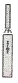
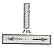
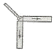
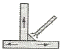
(정답률: 75%)
11. MIG 용접의 용적이행 중 단락 아크용접에 관한 설명으로 맞는 것은?
- 용적이 안정된 스프레이형태로 용접된다.
- 고주파 및 저전류 펄스를 활용한 용접이다.
- 임계전류이상의 용접 전류에서 많이 적용된다.
- 저전류, 저전압에서 나타나며 박판용접에 사용된다.
(정답률: 52%)
12. 용접결함 중 내부에 생기는 결함은?
- 언더컷
- 오버랩
- 크레이터 균열
- 기공
(정답률: 77%)
13. 다음 중 불활성 가스 텅스텐 아크 용접에서 중간 형태의 용입과 비드 폭을 얻을 수 있으며, 청정 효과가 있어 알루미늄이나 마그네슘 등의 용접에 사용되는 전원은?
- 직류 정극성
- 직류 역극성
- 고주파 교류
- 교류 전원
(정답률: 44%)
14. 용접용 용제는 성분에 의해 용접 작업성, 용착 금속의 성질이 크게 변화하므로 다음 중 원료와 제조방법에 따른 서브머지드 아크 용접의 용접용 용제에 속하지 않는 것은?
- 고온 소결형 용제
- 저온 소결형 용제
- 용융형 용제
- 스프레이형 용제
(정답률: 66%)
15. 용접시 발생하는 변형을 적게 하기 위하여 구속하고 용접하였다면 잔류응력은 어떻게 되는가?
- 잔류응력이 작게 발생한다.
- 잔류응력이 크게 발생한다.
- 잔류응력은 변함없다.
- 잔류응력과 구속용접과는 관계없다.
(정답률: 58%)
16. 용접결함 중 균열의 보수방법으로 가장 옳은 방법은?
- 작은 지름의 용접봉으로 재용접한다.
- 굵은 지름의 용접봉으로 재용접한다.
- 전류를 높게 하여 재용접한다.
- 정지구멍을 뚫어 균열부분은 홈을 판 후 재용접한다.
(정답률: 77%)
17. 안전ㆍ보건 표지의 색채, 색도기준 및 용도에서 문자 및 빨간색 또는노란색에 대한 보조색으로 사용되는 색채는?
- 파란색
- 녹색
- 흰색
- 검은색
(정답률: 64%)
18. 감전의 위험으로부터 용접 작업자를 보호하기 위해 교류 용접기에 설치하는 것은?
- 고주파 발생 장치
- 전격 방지 장치
- 원격 제어 장치
- 시간 제어 장치
(정답률: 86%)
19. 산화하기 쉬운 알루미늄을 용접할 경우에 가장 적합한 용접법은?
- 서브머지드 아크용접
- 불활성가스 아크용접
- CO2 아크용접
- 피복아크 용접
(정답률: 57%)
20. 용접 홈의 형식 중 두꺼운 판의 양면 용접을 할 수 없는 경우에 가공하는 방법으로 한쪽 용접에 의해 충분한 용입을 얻으려고 할 때 사용되는 홈은?
- I형 홈
- V형 홈
- U형 홈
- H형 홈
(정답률: 60%)
21. 금속산화물이 알루미늄에 의하여 산소를 빼앗기는 반응에 의해 생성되는 열을 이용하여 금속을 접합시키는 용접법은?
- 스터드 용접
- 테르밋 용접
- 원자수소 용접
- 일렉트로슬래그 용접
(정답률: 77%)
22. 아래 [그림]과 같이 각 층마다 전체의 길이을 용접하면서 쌓아 올리는 가장 일반적인 방법으로 주로 사용하는 용착법은?
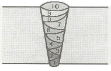
- 교호법
- 덧살 올림법
- 캐스케이드법
- 전진 블록법
(정답률: 83%)
23. 용접에 의한 이음을 리벳이음과 비교했을 때, 용접이음의 장점이 아닌 것은?
- 이음구조가 간단하다.
- 판 두께에 제한을 거의 받지 않는다.
- 용접 모재의 재질에 대한 영향이 작다.
- 기밀성과 수밀성을 얻을 수 있다.
(정답률: 59%)
24. 피복 아크 용접 회로의 순서가 올바르게 연결된 것은?
- 용접기 - 전극케이블 - 용접봉 홀더 - 피복 아크 용접봉 - 아크 - 모재 - 접지케이블
- 용접기 - 용접봉 홀더 - 전극케이블 - 모재 - 아크 - 피복아크 용접봉 - 접지케이블
- 용접기 - 피복아크용접봉 - 아크 - 모재 - 접지케이블 - 전극케이블 - 용접봉 홀더
- 용접기 - 전극 케이블 - 접지케이블 - 용접봉 홀더 - 피복아크 용접봉 - 아크 - 모재
(정답률: 67%)
25. 연강용 가스 용접봉의 용착금속의 기계적 성질 중 시험편의 처리에서 "용접한 그대로 응력을 제거하지 않은 것"을 나타내는 기호는?
- NSR
- SR
- GA
- GB
(정답률: 76%)
26. 용접 중에 아크가 전류의 자기작용에 의해서 한쪽으로 쏠리는 현상을 아크 쏠림(Arc Blow)이라 한다. 다음 중 아크 쏠림의 방지법이 아닌 것은?
- 직류 용접기를 사용한다.
- 아크의 길이를 짧게 한다.
- 보조판(엔드탭)을 사용한다.
- 후퇴법을 사용한다.
(정답률: 75%)
27. 발전(모터, 엔진형)형 직류 아크 용접기와 비교하여 정류기형 직류 아크 용접기를 설명한 것 중 틀린 것은?
- 고장이 적고 유지보수가 용이하다.
- 취급이 간단하고 가격이 싸다.
- 초소형 경량화 및 안정된 아크를 얻을 수 있다.
- 완전한 직류를 얻을 수 있다.
(정답률: 58%)
28. 가스 절단에서 양호한 절단면을 얻기 위한 조건으로 맞지 않는 것은?
- 드래그가 가능한 한 클 것
- 절단면 표면의 각이 예리할 것
- 슬래그 이탈이 양호할 것
- 경제적인 절단이 이루어질 것
(정답률: 71%)
29. 용접봉의 용융금속이 표면장력의 작용으로 모재에 옳겨 가는 용적이행으로 맞는 것은?
- 스프레이형
- 핀치효과형
- 단락형
- 용적형
(정답률: 53%)
30. 피복 아크 용접봉에서 피복제의 가장 중요한 역할은?
- 변형 방지
- 인장력 증대
- 모재 강도 증가
- 아크 안정
(정답률: 82%)
31. 저수소계 용접봉의 특징이 아닌 것은?
- 용착금속 중 수소량이 다른 용접봉에 비해서 현저하게 적다.
- 용착금속의 취성이 크며 화학적 성질도 좋다.
- 균열에 대한 감수성이 특히 좋아서 두꺼운 판 용접에 사용된다.
- 고탄소강 및 황의 함유량이 많은 쾌삭강 등의 용접에 사용되고 있다.
(정답률: 43%)
32. 폭발 위험성이 가장 큰 산소와 아세틸렌의 혼합비(%)는?
- 40 : 60
- 15 : 85
- 60 : 40
- 85 : 15
(정답률: 69%)
33. 연강용 피복금속 아크 용접봉에서 다음 중 피복제의 염기성이 가장 높은 것은?
- 저수소계
- 고산화철계
- 고셀루로스계
- 티탄계
(정답률: 56%)
34. 35℃에서 150kgf/cm2으로 압축하여 내부용적 45.7리터의 산소 용기에 충전하였을 때, 용기속의 산소량은 몇 리터 인가?
- 6855
- 5250
- 6150
- 70⑤
(정답률: 61%)
35. 산소 프로판 가스용접 시 산소 : 프로판 가스의 혼합비로 가장 적당한 것은?
- 1 : 1
- 2 : 1
- 2.5 : 1
- 4.5 : 1
(정답률: 70%)
2과목: 용접재료
36. 교류피복 아크 용접기에서 아크발생 초기에 용접전류를 강하게 흘려보내는 장치를 무엇이라고 하는가?
- 원격 제어장치
- 핫 스타트 장치
- 전격 방지기
- 고주파 발생장치
(정답률: 83%)
37. 아크 절단법의 종류가 아닌 것은?
- 플라즈마제트절단
- 탄소아크절단
- 스카핑
- 티그절단
(정답률: 81%)
38. 부탄가스의 화학 기호로 맞는 것은?
- C4H10
- C3H8
- C5H12
- C2H6
(정답률: 65%)
39. 아크 에어 가우징에 가장 적합한 홀더 전원은?
- DCRP
- DCSP
- DCRP, DCSP 모두 좋다.
- 대전류의 DCSP가 가장 좋다.
(정답률: 53%)
40. 열간가공이 쉽고 다듬질 표면이 아름다우며 용접성이 우수한 강으로 몰리브덴 첨가로 담금질성이 높아 각종 축, 강력볼트, 아암, 레버 등에 많이 사용되는 강은?
- 크롬 - 몰리브덴강
- 크롬 - 바나듐강
- 규소 - 망간강
- 니켈 - 구리 - 코발트강
(정답률: 63%)
41. 고장력강(HT)의 용접성을 가급적 좋게 하기 위해 줄여야할 합금원소는?
- C
- Mn
- Si
- CR
(정답률: 53%)
42. 내식강 중에서 가장 대표적인 특수 용도용 합금강은?
- 주강
- 탄소강
- 스테인리스강
- 알루미늄강
(정답률: 67%)
43. 아공석강의 기계적 성질 중 탄소함유량이 증가함에 따라 감소하는 성질은?
- 연신율
- 경도
- 인장강도
- 항복강도
(정답률: 57%)
44. 금속침투법에서 칼로라이징이란 어떤 원소로 사용하는 것인가?
- 니켈
- 크롬
- 붕소
- 알루미늄
(정답률: 53%)
45. 주조시 주형에 냉금을 삽입하여 주물표면을 급랭시키는 방법으로 제조되며 금속 압연용 롤 등으로 사용되는 주철은?
- 가단주철
- 칠드주철
- 고급주철
- 페라이트주철
(정답률: 50%)
46. 알루마이트법이라 하며, Al 제품을 2% 수산 용액에서 전류를 흘려 표면에 단순하고 치밀한 산화막을 만드는 방법은?
- 통산법
- 황산법
- 수산법
- 크롬산법
(정답률: 71%)
47. 주위의 온도에 의하여 선팽창 계수나 탄성률 등의 특정한 성질이 변하지 않는 불변강이 아닌 것은?
- 인바
- 엘린바
- 슈퍼인바
- 베빗메탈
(정답률: 63%)
48. 다음 가공법 중 소성가공법이 아닌 것은?
- 주조
- 압연
- 단조
- 인발
(정답률: 45%)
49. 다음 중 담금질에서 나타나는 조직으로 경도와 강도가 가장 높은 조직은?
- 시멘타이트
- 오스테나이트
- 소르바이트
- 마텐자이트
(정답률: 49%)
50. 일반적으로 강에 S, Pb, P등을 첨가하여 절삭성을 향상시킨 강은?
- 구조용강
- 쾌삭강
- 스프링강
- 탄소공구강
(정답률: 75%)
3과목: 기계제도
51. 그림과 같이 파단선을 경계로 필요로 하는 요소의 일부만을 단면으로 표시하는 단면도는?
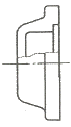
- 온 단면도
- 부분 단면도
- 한쪽 단면도
- 회전 도시 단면도
(정답률: 66%)
52. 그림과 같은 치수 기입 방법은?
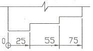
- 직렬 치수 기입법
- 병렬 치수 기입법
- 조합 치수 기입법
- 누진 치수 기입법
(정답률: 59%)
53. 관의 구배를 표시하는 방법 중 틀린 것은?
- 1/200
- 0.2%
 5°
5°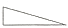
0.5
(정답률: 54%)
54. 도면에서 표제란과 부품란으로 구분할 때 다음 중 일반적으로 표제란에만 기입하는 것은?
- 부품번호
- 부품기호
- 수량
- 척도
(정답률: 73%)
55. 그림과 같은 용접이음 방법의 명칭으로 가장 적합한 것은?
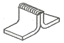
- 연속 필릿 용접
- 플랜지형 겹치기 용접
- 연속 모서리 용접
- 플랜지형 맞대기 용접
(정답률: 65%)
56. KS 재료 기호에서 고압 배관용 탄소강관을 의미하는 것은?
- SPP
- SPS
- SPPA
- SPPH
(정답률: 53%)
57. 용도에 의한 명칭에서 선의 종류가 모두 가는 실선인 것은?
- 치수선, 치수보조선, 지시선
- 중심선, 지시선, 숨은선
- 외형선, 치수보조선, 해칭선
- 기준선, 피치선, 수준면선
(정답률: 65%)
58. 그림과 같은 원뿔을 전개하였을 경우 나타난 부채꼴의 전개각(전개된 물체의 꼭지각)이 150° 가 되려면 ℓ의 치수는?
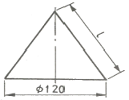
- 100
- 122
- 144
- 150
(정답률: 49%)
59. 리벳의 호칭 방법으로 옳은 것은?
- 규격 번호, 종류, 호칭지름×길이, 재료
- 명칭, 등급, 호칭지름×길이, 재료
- 규격번호, 종류, 부품 등급, 호칭, 재료
- 명칭, 다음질 경도, 호칭, 등급, 강도
(정답률: 63%)
60. 그림과 같은 제3각법 정투상도의 3면도를 기초로 한 입체도로 가장 적합한 것은?
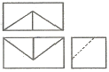
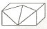
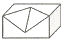
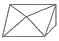
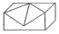
(정답률: 77%)